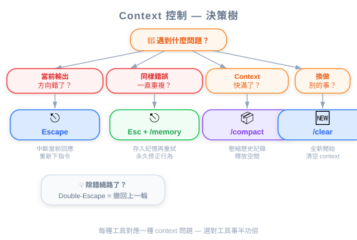

圖：Context Window 是有限資源 — 類比。

| 項目 | 內容 |
|---|---|
| 考試對應 | D5 — Reliability & Performance（15%）、D3 — Claude Code Configuration & Workflows（20%） |
| Task Statements | 5.1 ★★★（context preservation）、5.4 ★★（large codebase context）、3.5 ★★（iterative refinement） |
| 課程來源 | claude-code-in-action / 03-context-and-commands / Lesson 10 |
Context 是有限資源 — Escape 中斷產出、雙擊 Escape 倒帶對話歷史、/compact 摘要保留已學知識、/clear 完全重來。選對工具就能讓 Claude 保持專注、節省 tokens。
Claude Code 在一個固定大小的 context window 裡運作。你發的每一條訊息、Claude 讀的每一個檔案、每一次 debug 的來回，全部都消耗 tokens。當 window 滿了，Claude 會丟失早期的資訊，導致：
管理 context 不只是方便 — 它直接影響輸出品質。
停止 Claude 正在產出的內容。適用於：
- Claude 正往錯誤方向走
- 你想在它浪費 tokens 之前重新導向
- 你需要在 Claude 完成前提供額外指引
💡 Escape + Memory = 永久修正
當 Claude 重複犯同一個錯（例如試圖讀取一個不存在的 config 檔），立刻按 Escape，然後用
#快捷鍵儲存一條 memory，記錄正確行為。這可以防止未來 session 再犯同樣的錯 — 不只是當前對話。
按兩次 Escape 可以看到你所有的訊息歷史，跳回任何一個之前的時間點。這會丟棄選定點之後的所有訊息，等於倒帶對話。
最適合用在：
- Debug 的來回污染了 context
- 你想從一個已知正確的狀態重新嘗試
- Claude 順利完成了 Task A，但在 Task B 撞到問題，你想回到 Task A 完成後的狀態
🎬 影片補充
講師示範在
auth.ts裡寫四個函式的測試。在為createSessiondebug 一個缺少 package 的問題後，他倒帶到 debug 之前，把 prompt 改成「寫 getSession 的測試」。這保留了有用的 context（Claude 已經讀過auth.ts），同時丟掉了噪音（package debug 歷史）。
/compact — 摘要後繼續把整個對話壓縮成摘要，然後從摘要繼續。核心區別：Claude 保留已學的知識，但以壓縮的形式。
最適合用在：
- Claude 在這個 session 中已經累積了對 codebase 的深入理解
- 你在相關子任務之間切換（例如完成函式 2 的測試後開始函式 3）
- Context window 快滿了但累積的知識很寶貴
/clear — 全新開始清除整個對話歷史。Claude 從零開始（除了 CLAUDE.md 和 memories）。
最適合用在：
- 你要切換到完全不相關的任務
- 當前對話已經太混亂，搶救 context 反而有害
- 開始一個新的 coding session 做不同的 feature
| 情境 | 工具 | 原因 |
|---|---|---|
| Claude 正在產出爛東西 | Escape | 立刻止血 |
| Claude 又犯了同樣的錯 | Escape + Memory | 永久修正 |
| Debug 的來回污染了 context | 雙擊 Escape | 倒帶到乾淨狀態，保留之前有用的 context |
| Context 滿了但知識很寶貴 | /compact |
壓縮，不丟棄 |
| 切換到完全不同的任務 | /clear |
全新開始，不帶包袱 |
| 長 session，漸漸失去連貫性 | /compact |
摘要以回收 window 空間 |
🎯 考試重點
考試會測你是否理解 context preservation 和 context pollution 之間的取捨。核心洞察：更多 context 不一定更好。不相關的 context（debug 噪音、失敗的嘗試）會主動降低輸出品質。
| 概念 | 類比 |
|---|---|
| Context window | RAM — 有限，所有執行中的 process 共享 |
| Escape（中斷） | Terminal 裡的 Ctrl+C — 殺掉當前 process |
| 雙擊 Escape（倒帶） | git reset --soft HEAD~3 — 撤銷最近的 commits，保留 working tree |
/compact |
git squash — 把多個 commits 壓成一個，保留淨結果 |
/clear |
在新目錄 git init — 從零開始 |
| Context pollution | Memory leaks — 每次 debug 都留下殘留物，降低效能 |
| 反面模式 | 問題 | 更好的做法 |
|---|---|---|
長 session 從不用 /compact |
Context window 滿了，Claude 忘記早期指令 | 每完成一個邏輯子任務就 compact |
用 /clear 但其實 /compact 就夠了 |
丟掉了寶貴的已學 context | 只在切換到不相關工作時才 /clear |
| 讓 Claude 無止境 debug 不中斷 | 浪費 tokens，用失敗的嘗試污染 context | 早按 Escape，提供指引，必要時倒帶 |
| 不為重複犯的錯存 memory | 同樣的錯在每個新 session 出現 | Escape + # memory 快捷鍵永久修正 |
| 開始新任務不做任何 context 管理 | 前一個任務的噪音干擾新任務 | /compact（相關任務）或 /clear（不相關任務） |
圖：Context Window 是有限資源 — 類比。
這直接對應 Task Statement 5.1（context preservation）和 5.4（large codebase context）：
| 考試情境 | 測什麼 |
|---|---|
| S2（Code Gen） | 產生新模組的 code 前，應該 compact 還是 clear？ |
| S4（Developer Productivity） | 如何在多步驟 coding session 中維持專注？ |
核心考試哲學：
- Context 是有限資源 — 把它當記憶體配置來管理，不是無限日誌
- Signal > Noise — 主動管理 window 裡留什麼
- Iterative refinement（Task 3.5）— Escape + 重新導向比讓 Claude 完成一個壞方向更快
你已經和 Claude Code pair-programming 30 分鐘了。Claude 讀了你的資料庫 schema、理解了你的 ORM patterns，也成功實作了三個 API endpoints。你現在需要實作第四個 endpoint，pattern 一樣。但是 context window 因為第二個 endpoint 的 debug 輸出快滿了。你該怎麼做？
/clear 重新開始做第四個 endpoint/compact 摘要這個 session，然後要求做第四個 endpoint你叫 Claude 重構一個 utility 檔案，但它開始改錯檔案了。Claude 在對話早期已經讀過正確的檔案。最快回到正軌的方式是什麼？
/clear 從頭開始Claude 一直嘗試從 utils/test-helpers.ts import test helper，但你的專案裡這個檔案其實在 test/helpers.ts。這是跨不同 session 第三次犯這個錯了。最有效的長期修正是什麼？
# 快捷鍵儲存一條 memory 記錄正確路徑